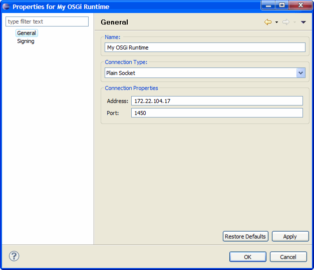
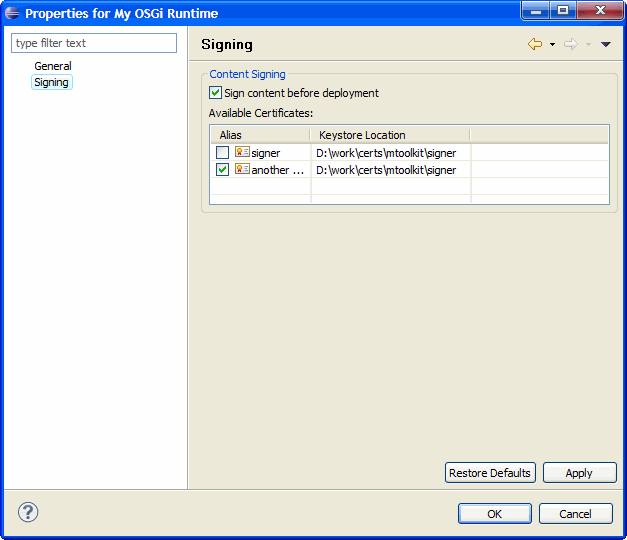

To configure the properties of an already added OSGi framework:
As a result, the Framework Properties dialog appears with the connection and sigining settings of the OSGi framework.

Figure 1: Connection settings of an OSGi Runtime

Figure 2: Signing settings of an OSGi Runtime

OSGi Management Overview
OSGi Frameworks Tree
Remote Console

Adding/Removing an OSGi Runtime
Configuring the Properties of an OSGi Runtime
Connecting to/Disconnecting from an OSGi Runtime
Managing Bundles
Managing Applications
Using the Remote Console
Customizing OSGi Runtime Management
Opening the Web Admin Console inside Eclipse
OSGi Runtime Management Troubleshooting

Frameworks View
Frameworks View Tree Icons
Frameworks View Menus and Toolbar